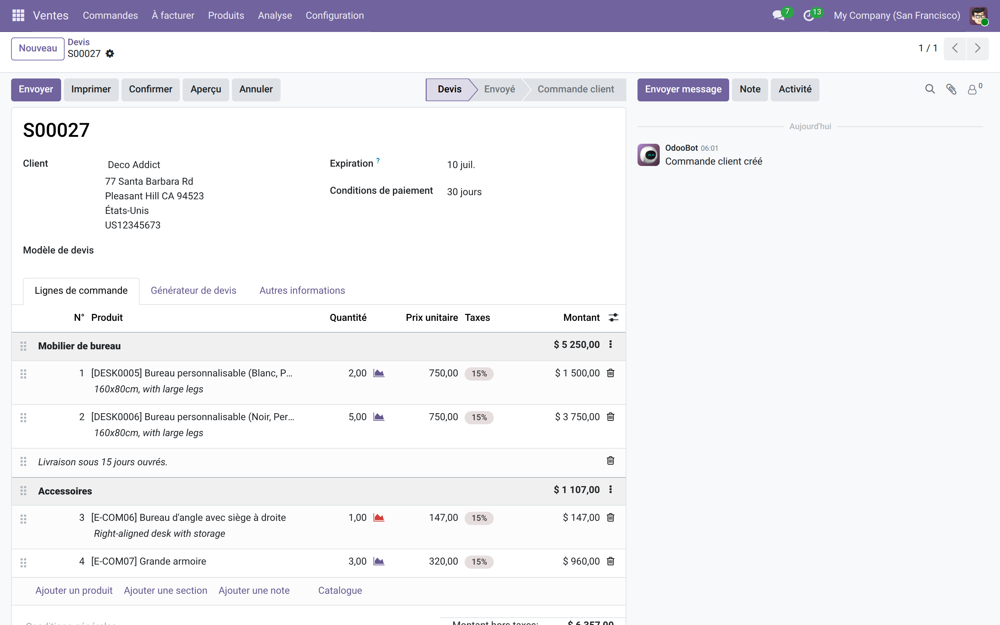
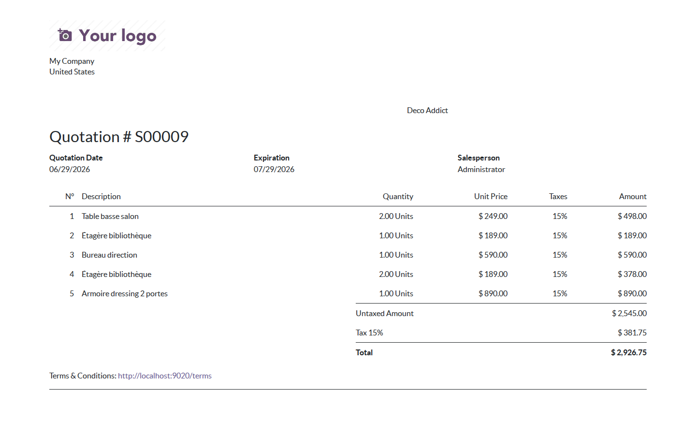

Quotation Line Numbers
Every product line gets an automatic number — on screen and on the PDF sent to the customer.
On a twenty-line quotation, the customer replies "I have a question about the corner desk" — but there are three of them. The salesperson answers "which one?" — and the exchange goes in circles. Without numbering, every piece of customer feedback becomes a line hunt: scrolling, comparing, the risk of confusion and of changing the wrong quantity. Multiplied by ten quotations a week, that is real time lost and a source of order errors.
What it brings
- 🔢 Automatic numbering — an "N°" column appears at the start of the lines table as soon as the module is installed, with no configuration at all.
- 📄 Numbered customer PDF — the printed report uses exactly the same numbering: customer and salesperson talk about the same lines.
- ⚡ Instant renumbering — after a drag and drop or a new line, the numbers are recalculated automatically in the right order.
- ✅ Sections and notes skipped — only product lines are numbered; section headings and notes stay out of the count, as expected.
- 🚀 Zero setup — installing the module is enough; the column is visible right away on all existing quotations and orders.
In pictures
1. N° column in the lines table
As soon as the module is installed, the "N°" column appears in first position in the order lines table. Each product line automatically receives a sequential number.

2. Same numbering on the PDF report
The printed PDF report uses exactly the same numbering. The customer can write "question on line 3" and the salesperson instantly knows which line it is.

Why adopt it
- Customer feedback is handled faster: "see line 12" is unambiguous, even on a 30-line quotation.
- The number is stored and consistent between the screen and the PDF — no need to count lines by hand.
- Compatible with Community and Enterprise: no dependency on Enterprise modules, 100% standard Odoo 19.
- Open source module (LGPL-3): no restriction on commercial use.
LGPL-3 license — compatible with Odoo 19.0 (Community and Enterprise). Support: apps@odooskills.com.